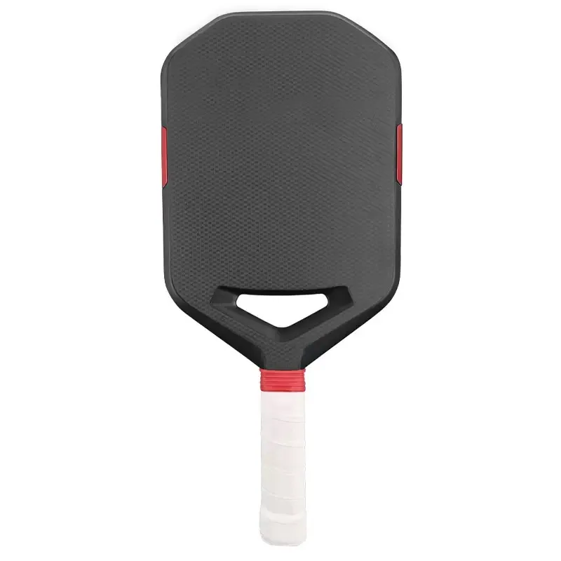
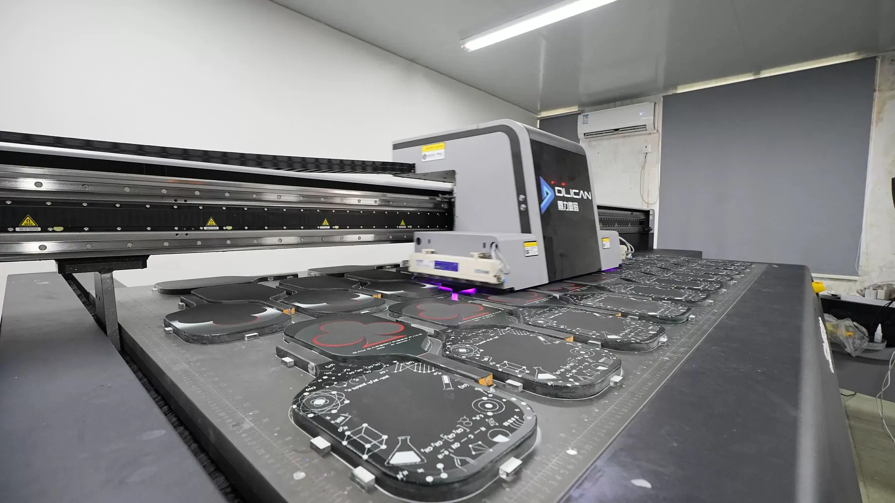
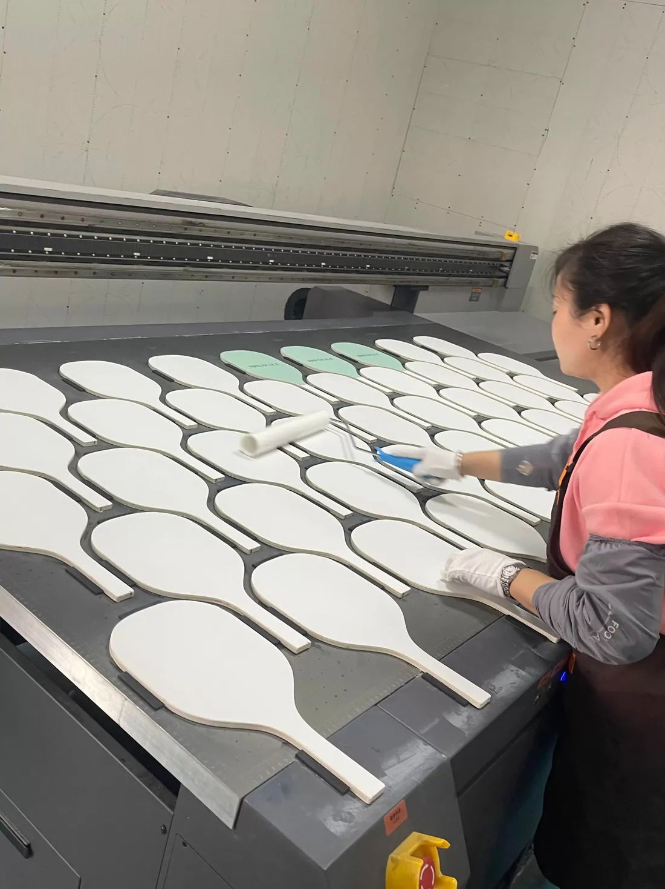
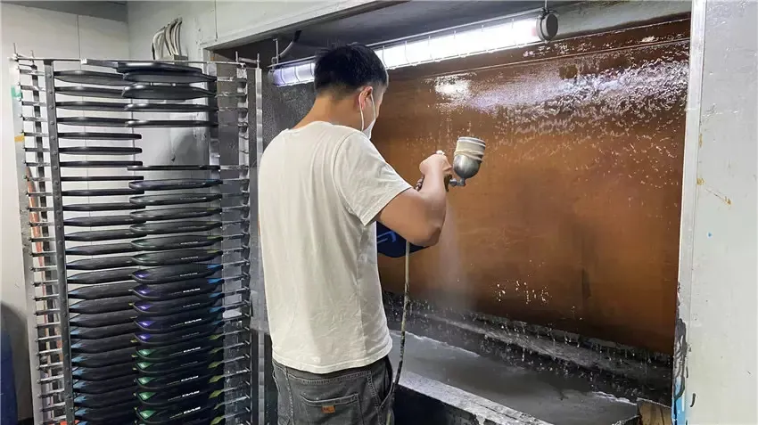
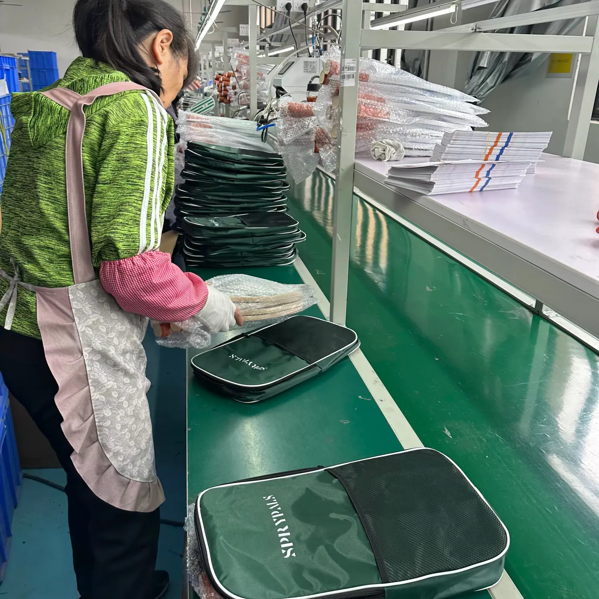

Carbon Fiber Face
T700, woven carbon and composite face options can be reviewed around feel, strength and surface targets.
OEM Pickleball Product Development
OEM & Private Label Manufacturing for Brands & Distributors
From carbon fiber construction and product development to custom branding, packaging and batch production, AeroCarbon Tech provides an integrated OEM supply solution for global pickleball brands.

Start from a target specification, reference sample or existing product. Each option is configurable and subject to project review, sampling and production validation.
T700, woven carbon and composite face options can be reviewed around feel, strength and surface targets.
Honeycomb, foam and reinforced core concepts are available according to the approved product program.
Outline, head proportions, handle length and dimensional targets can follow your design or reference sample.
Texture, paint, print and appearance options are evaluated for performance, durability and brand positioning.
Grip, perimeter support, EVA solutions and TPU edge protection are available OEM considerations.
Private-label graphics, retail presentation, inserts, barcodes and carton requirements can be coordinated.
A neutral construction framework for engineering discussion. Final materials, thicknesses and interfaces are confirmed through project review and sample validation.
CONFIGURABLE OEM PLATFORM
Available concepts include T700 carbon fiber faces, 16 mm builds, foam or polymer core structures, EVA perimeter solutions and TPU edge protection. Every claim and configuration remains subject to sample review, testing and written production approval.
AeroCarbon Tech combines its core carbon fiber manufacturing capabilities with specialized production partners for molding, surface processing, assembly, branding and packaging. We coordinate product requirements, quality control and final delivery through an integrated China supply chain.




These photos document specialized production-partner operations coordinated within AeroCarbon Tech's integrated China supply network; they are not presented as processes inside the audited 5007 sqm carbon fiber facility.
Unlike a generic sourcing agent, AeroCarbon Tech is backed by established carbon fiber material and CNC manufacturing capabilities, while integrating specialized product manufacturing for finished OEM delivery.
Testing and certification support can be reviewed according to the target market, product specification and customer program.
A controlled path keeps construction, appearance and commercial expectations aligned before repeat production.
Reference paddle, sample, specification and target performance.
Initial construction and appearance for practical review.
Feedback translated into controlled product changes.
Confirm repeatability before wider batch commitment.
Manufacturing against the approved specification.
Final checks, private-label packing and global dispatch.
Pickleball OEM RFQ
Share your reference product, expected quantity and branding requirements for an initial OEM review.